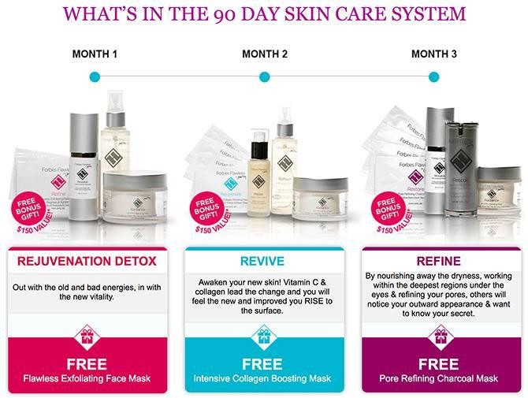
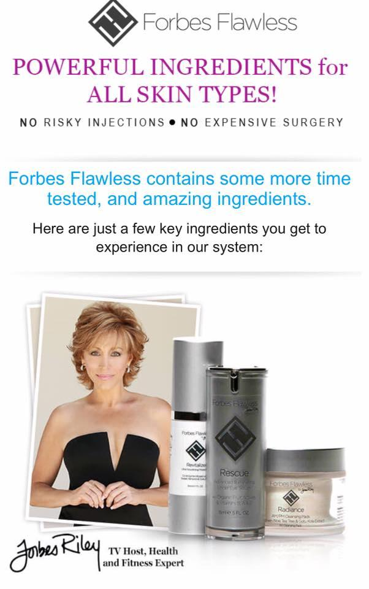
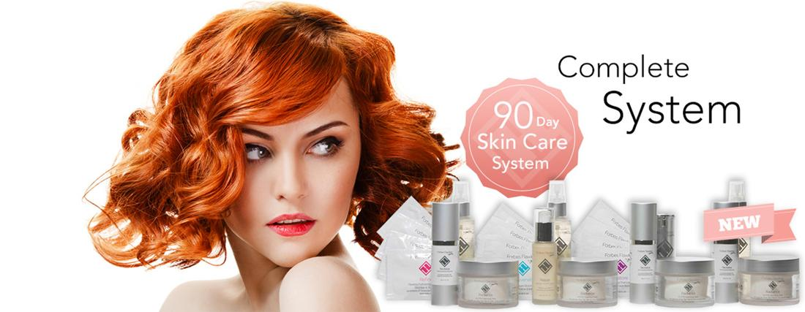
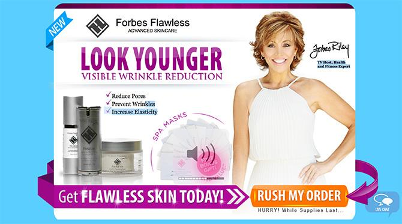

Forbes Flawless Anti-Wrinkle System

Get YOUR GREAT SKIN NOW! Guaranteed
 Get YOUR GREAT SKIN NOW! Guaranteed
Get YOUR GREAT SKIN NOW! Guaranteed
Forbes Flawless : Incredible Age-Defining Solution!
Forbes Flawless is a natural skin care product. The main component inside is Gotu Kola extract. The plant has used for many years to treat many illness. It can heal wounds, improves mental clarity, and take care of skin problems. The world is now becoming older. So does your skin. It is getting older by time since there are many factors makes the aging signs come faster. The skin surface may become weird. This fact delivers you to a choice for treating your skin by medicine or surgery. However, those are not good. The chemical cosmetic or medicine remains side effect. That is why, it is not good for long-term use.
In another hand, surgery is making your skin even worse. It remains scars and pain. You need to check the condition and see the doctor regularly. By time, the surgery mark is possible to cause irritation too. Perhaps, it offers fast result. Unfortunately, it remains high risk and expensive cost. The solution provided by Forbes Flawless is good. Beside it has natural components, it offers you complete solution to combat aging marks. It is true. The media has been buzzing about this product effectiveness too.
Using the 90 days skin care steps, it creates younger look and maximum skin firmness. The ability of this product is remarkable. You can use this in a long-term use. It is safe and completely tested. The effect may appear is wrinkle elimination. It will then cure the damage skin cells. Repairing the cells deeply till it becomes firm. It also increases the elasticity inside. It makes the product powerful enough to prevent aging skin.
Get YOUR GREAT SKIN NOW! Guaranteed
Using the 90 days skin care steps, it creates younger look and maximum skin firmness. The ability of this product is remarkable. You can use this in a long-term use. It is safe and completely tested. The effect may appear is wrinkle elimination. It will then cure the damage skin cells. Repairing the cells deeply till it becomes firm. It also increases the elasticity inside. It makes the product powerful enough to prevent aging skin.
Get YOUR GREAT SKIN NOW! Guaranteed
Get YOUR GREAT SKIN NOW! GuaranteedIngredients of Forbes Flawless
The ingredients include in Forbes Flawless produce amazing result. The skin care product will develop the skin cell regeneration. Then, it improves the way your skin cell moisturize and developing firmness. The components inside are:
- Gotu Kola – That is the well-known name of Centella Asiatica. A powerful plant that heals many kinds of illness. It is good for rejuvenating the skin cells. It repairs the damage happen on the skin surface
- Pomegranate Extract – Pome fruit is popular with its powerful antioxidant. The use of Pome extract is able to provide the complex protection. It can protects the skin from free radicals and UV radiation
- Vitamin E – This vitamin works well as an antioxidant too. However, it focuses to maximize the skin firmness. It also improves the skin elasticity perfectly. It produces many benefits on the skin youth and health.
- Green Tea – Green tea extract is a helpful component. It increases the skin brightness. It has significant result to enhance the skin look. It prevents uneven skin tone too. Moreover, it is good for keeping the skin health too
- Aloe Vera – Aloe leaf extract is inside Forbes Flawless. It moisturizes the skin effectively. It injects the water supply for making the skin more elastic. It also makes the skin pores tighten.
Those Ingredients have tested well. Therefore, the use of the product will never make you disappointed. It is good for two purposes. The first one is to repair damaged skin surface. The second one is keeping up the ageless look. Many people usually got the visible effect during a few weeks only. It can evolve the skin moisture. It also boosts the collagen production. That is why, the use of the product in a long term manner as recommended. It provides you much better result.

What is Forbes Flawless?
Forbes Flawless is the extract of Centella Asiatica. The plant has been popular among Asian people. It grows largely on West Asian, China, Indonesia, and around India. It is a relatively small plant with a thousand benefits. The use of this plant historically noted in China. At that time, people use the leaves to combine it with tea. It heals wound, helps mental clarity, and preventing aging skin. Let’s say, the extract actually boost the cell’s regeneration. Therefore, the extract is possible to regenerate the skin cells too. It boosts collagen production. It also increases the elastin component inside the skin. It finally makes the skin increases the elasticity. It simply creates younger look.
The skin will be much more beautiful. It is possible for now to gain younger appearance than your age. In fact, the use of Centella Asiatica has reported to support someone lives longer up to 200 years old in China dynasty era. It is because the healing effect inside the product. The possibilities also provided for the skin cell health. It rejuvenates the skin cells deeply. It makes the cell regenerates smartly. Then, it naturally improves your natural beauty.
Moreover, the product completed with some vitamins and other components. Therefore, this product is not only natural. Yet, it provides you the best solution. Your youthful skin will appear around few weeks of use. It marks the visible effect without causing any damage. Unlike this product, cosmetics and surgery may become possibly harmful. Those are dangerous. Those create the fast effect yet full of risk. In another hand, using the natural product like Forbes Flawless is better. It provides you longer effect. It is suitable for long-term application. It is less expensive with harmless effect.
